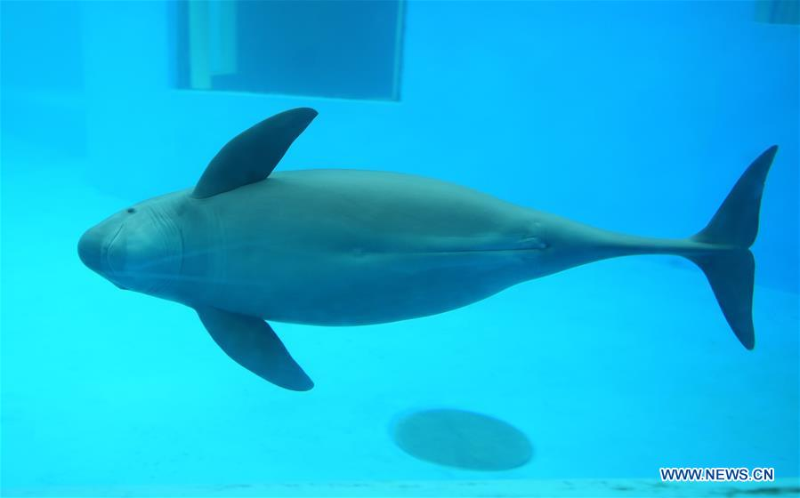
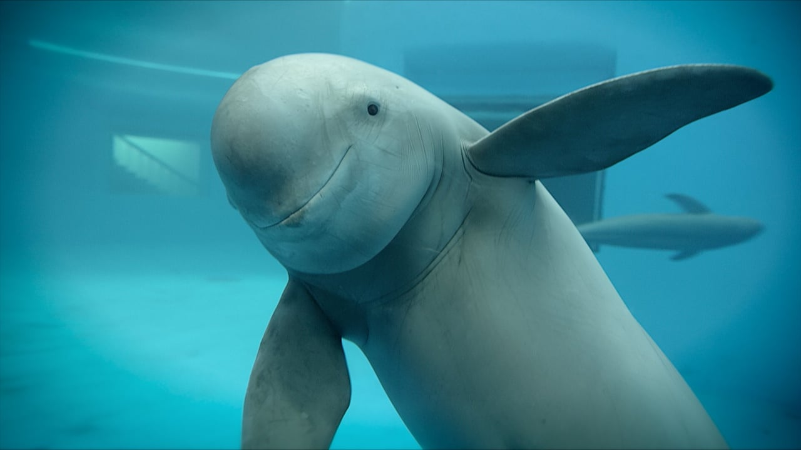
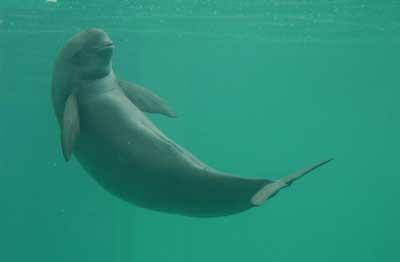
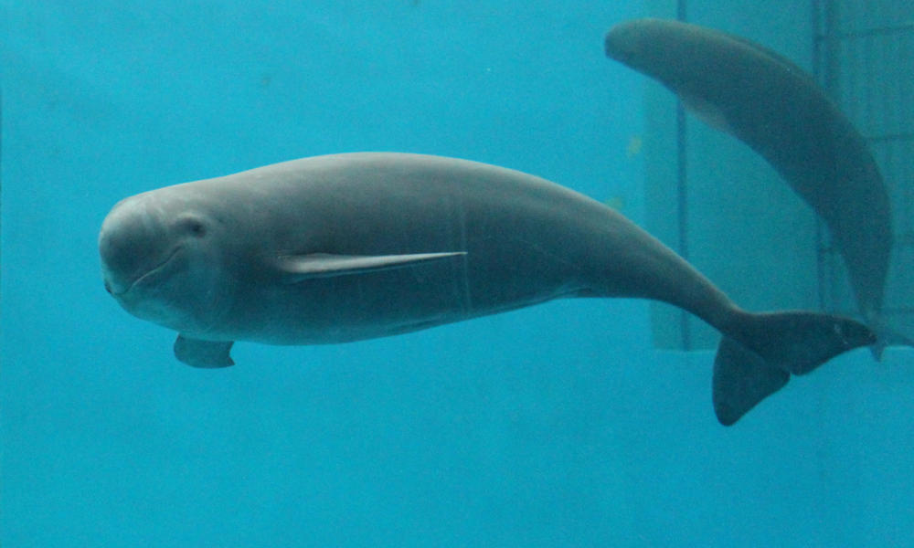
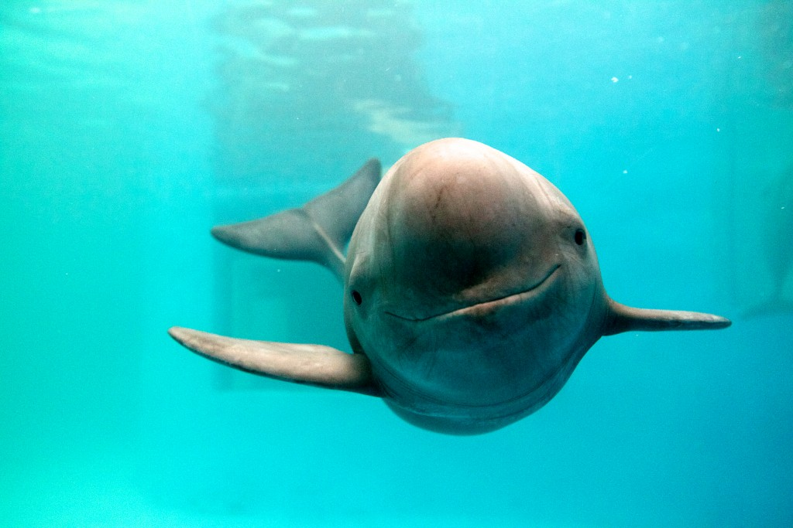
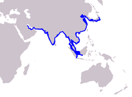

Basic Information
The scienceitic name of the Yanyze Finless Porpoise is Neophocaena Asiaeorientalis. They can even be call Indo-Paific Finless Porpoise. This type of porpoise is the only freshwater porpoise living in the world. The Yanyze Finless Porpoise is a very small group of toothed whales. There are many things people can do to help this animal. If you do not know about this animal, please read about it.
Characteristics
This porpoise is called a finless porpoise because they are lacking a dorsal fin. Instead of a dorsal fin, these porpoises have a rigde that runs down the middle of their back. The round head and lack of an apparent beak makes this animal unique. Different from other porpoises, Yantze Finless Porpoises have a slender body which is dark on the upper side and lighter on the underside. These poropises can grow to be 170cm (5.6ft) in length and weight up to 7kg (154.3lbs). Finless poropises are usually quite and shy throwards others. They do not gather to form large groups. Porpoises mostly feed on schooling fishes, squids, octopuses, shrimps, and prawns.
     Conservation
The Yangtze Finless Porpoise lives in the feshwater of the Yangtze River. This river is located in the Southeast and East of Asia. They also can be found in the Western Pacific and Indain Oceans. Most of these porpoises inhabit in Bungladesh, China, India, Indoesia, Japan, and Korea. Shallow waters, swamps, and etuaries are common areas where they mostly can be found. They live in these waters all year around. Currentaly there are no reservations to help this poor animal.
Yangtze Finless Porpoises are endanered because of threats. They need an abundant food supply for survival. The destruction of their food supply is one of the causes that is leading to the extinction of this animal. The central factor is overfishing. Overfishing is causing a decrease in their food supply, but pollution and ship movement are factors as well. The max amount of Yangtze Finless Porpoises left in the world is about 1, 800. The estimated time left is 10-15 years before they are completely extincted. That is not a lot of time.